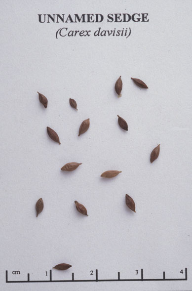
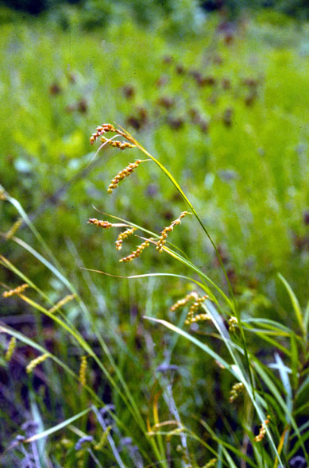

Carex Davisii
Family: Cyperaceae
Awned Graceful Sedge
Swink/Wilhelm # 7

Click to view larger photo
FLOWERING: May to July.
SEED TIMING: Mid-June to early July.
HABITAT: Wooded floodplains, moist thickets and wet prairies.
DIAGNOSTIC FEATURES: Grows 1.5 to 3 feet tall. The only sedge with smooth perigynia and hairy leaves.
TO PICK: Strip stalk or pick entire head when spikelets turn toasty golden brown.
WARNING: Non-toxic plant.